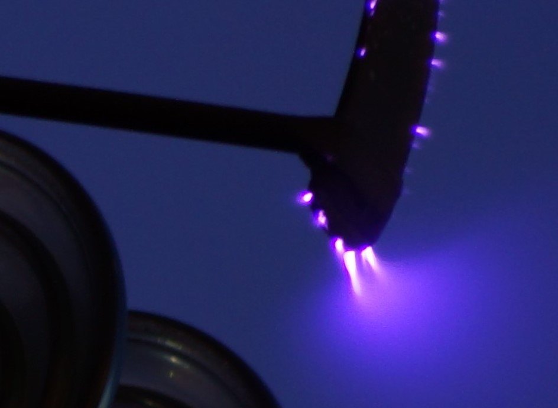
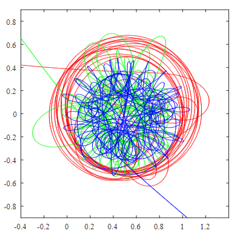

Projects:
- CPhO translation [quit because it's a serious waste of my time]
I am working on the translations for about twenty years worth of problems from the Chinese Physics olympiad, which is currently available online in Chinese only. - Corona discharge of power lines [on hold...]
Trying to photograph the ionization of the air around around high voltage power lines.  - Spectrometer [in progress]
Using light sensitive photographic paper to construct a (bad) spectrometer
- Atmospheric refraction [done]
How much later does the sun set due to the refraction of light in the atmosphere?
And a generalization to times other than sunset
- Orbits [ongoing]
some messing around with 3-body, equal mass simulator  - Bucket problem [thinking]
Analysis of the light on the bottom of a reflective bucket
Random stuffs:
Here is my favorite physics video: Rotating textbook. It humbled (humbles) me!Useful Links for Olympiad students:
- IPhO
- Northern Baltic Physics Olympiad
- Chinese Physics Olympiad
- Canada
- Princeton
- Europe 2018
- Europe 2017
- Asian Physics Olympiad
- Hong Kong Physics Olympiad
- Romanian Masters (Click Last editions for past problems)
- India Physics Olympiad
- Jaan Kalda's website
- British Physics Olympiad
- Boston Area Undergraduate Physics Competition